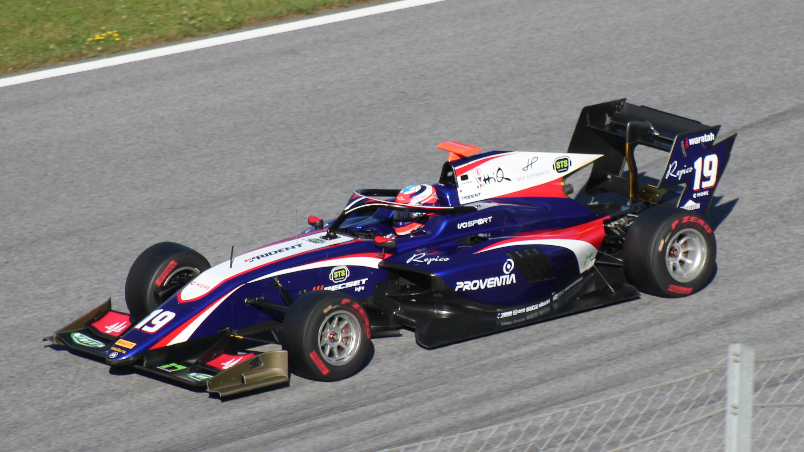

<!DOCTYPE html>
<html style="height:100%"></html>
    <head>
        <meta charset="UTF-8">    
        <meta name="viewport" content="width=device-width, initial-scale=1.0">
        <title>Formula Cars - F1</title>
    </head>
    <body style="height:100%">
        <header class="container-fluid text-center"></header>
        <nav class="nav principal"></nav>
            <ul class="nav-list">
                <li class="nav-item">
                    <a class="nav-link" href="index.html">Main Page</a>
                </li>
                <li class="nav-item">
                    <a class="nav-link" href="formula1.html">Formula 1</a>
                </li>
                <li class="nav-item">
                    <a class="nav-link" href="formula2.html">Formula 2</a>
                </li>
                <li class="nav-item">
                    <a class="nav-link" href="formula3.html">Formula 3</a>
                </li>
            </ul>
        </nav>
        <main class="principal">
            <div class="picture">
                
            </div>
            <div class="description"> 
                    <h1>Formula 3</h1>
                    <h5>Formula Three, also called Formula 3 or F3, is a third-tier class of open-wheel formula racing. The various championships held in Europe, Australia, South America and Asia form an important step for many prospective Formula One drivers. Formula Three has traditionally been regarded as the first major stepping stone for F1 hopefuls – it is typically the first point in a driver's career at which most drivers in the series are aiming at professional careers in racing rather than being amateurs and enthusiasts. F3 is not cheap, but is regarded as a key investment in a young driver's future career. Success in F3 can lead directly to a Formula 2 seat or even a Formula One test or race seat.</h5>
            </div>
        </main>
    </body>
</html>